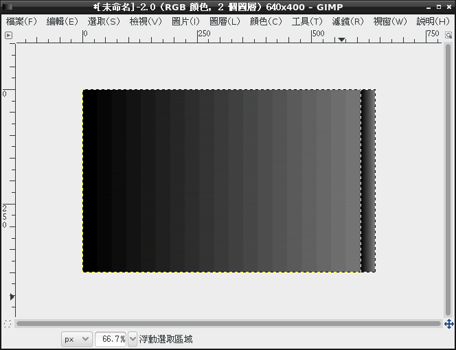
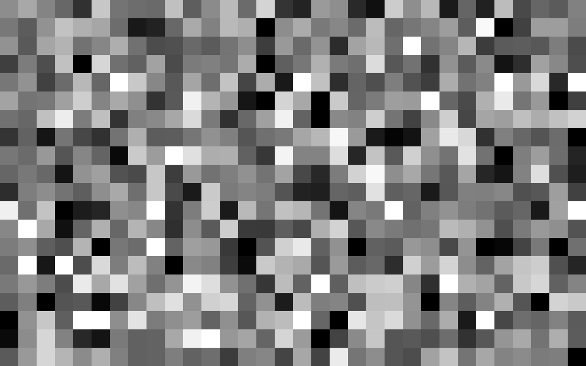

也紀念我們永遠的朋友 李士傑先生（Shih-Chieh Ilya Li）。
《雪凡與好朋友們的 Ren'Py 遊戲引擎初學心得提示》第八回：大雜煮與黑暗鍋！
歡迎各位再次蒞臨我們的節目，大家好，我是……
 「嗨哈，大家好！鍋子放在哪裡啊？」
「嗨哈，大家好！鍋子放在哪裡啊？」
「姊……姊姊！還沒輪妳……啊不好！……」
「大、那個、嘿，大家好哇！……我是小諾，很高興能認識各位……」
「哈哈哈！諾諾笑得好僵！開心點嘛，難得的火鍋日耶，我材料都帶來了。」
啊啊，出現了……那個傢伙！
該怎麼說好呢？雖然好像一切都是命……不過今天當真是由小諾小姐您和那個、那個，呃……
「……什麼嘛！我的名字是可芙恩！居然忘記了嗎？」
……和那個笨蛋一起上節目嗎？
「喂！太失禮了吧！」
「（小聲）對、對不起……」
不會啦，不過說到底，今天為什麼會由您和那位可芙恩小姐一起來上節目呢？不是從第一回之後就沒露過臉了嗎？是有遇到什麼好事嗎？
「不是啦，只是姊姊她以為今天會在節目中舉辦黑暗鍋大會，所以就興匆匆地……」
哈啊？黑暗鍋？那怎麼可能！
不，等等……雖然標題確實是那樣大大地寫著，但是……您知道的，隱喻是一種重要的文學技法……所以說……
「什麼什麼？什麼東西！要上桌了嗎？……對了，我今天有帶榴槤來哦！」
……等一下！妳到底想把什麼危險的東西放進去啊！？
「……真的是非常抱歉！」
不，我已經充份瞭解到您也是很辛苦的，就讓我們一起加油吧。畢竟不加油也不行啊……
今天的節目就這樣正式開始了～
首先，要被我們放進鍋子裡煮的，是 Ren'Py 中所蘊含的圖層概念－－這大部份是觀念問題，實作並不多，不過如果未來想要更深入 Ren'Py 的世界，稍微理解一下可以少繞不少彎路。
緊接在其後的，是在遊戲中播放「過場動畫」的方法。本節目將會深入介紹兩種播放影片的手法。而檔案格式方面的選擇問題，以及播放系統的限制與瑕疵也都不會漏掉。
再之後，我們會補齊先前討論 ATL 時就該加以說明，但卻被我隨便跳過的 Transform 語句的運用與定義。而最後作為壓軸的話題，則是自定義轉場 (Transition) 的建立技巧。
如您所見，本回要介紹的都是些零碎的小東西。
因為很零碎不知道該放哪裡，跳過又不好，所以特地在此集中起來用大鍋煮上一鍋。雖然這樣提醒可能有些多餘，但關於題目的命名，還請不要有太過多餘的期待。
「誒？怎麼會？沒要吃火鍋嗎？除了榴槤我還帶了鞋子耶……」
……呃，那還真是辛苦妳了。
「…………」
「……咦？諾諾？妳在生氣嗎？」
「我沒有生氣啊？你哪隻眼睛覺得我在生氣？」
「……好、好啦，那火鍋就等把觀眾處理掉之後再說，不要生氣唷。乖乖。」
「（正經）那麼就以最快速度－－」
「快點開始啦！」
衝囉！
Ren'Py 中的圖層
在講解 Ren'Py 的圖層之前，先說說「圖層」是什麼意思。
圖層是一種電腦繪圖中的概念。如果您截至目前為止，還從未聽說過「圖層」這個詞，那麼您可以這樣理解：
- 圖層就是一張張互相重疊的，有著先後次序的「透明塑膠片」。
- 在每片透明塑膠片上，可以分別畫上不同的圖。
- 而「最終畫面」，就是所有塑膠片重疊之後，由上而下看上去的樣子。
▲ 圖1：視線由上而下穿過各個圖層。
很簡單就可以想像得出來，上層塑膠片上有畫圖的部份，將會遮蓋住下層塑膠片的某些部份，而下層又會遮蓋住更下層。更進一步去想像－－如果作畫時使用了半透明顏料，則上下層的顏色還會互相混合在一起。這就是圖層的最大特徵。
▲ 圖2：假如圖層中有畫上東西，上層的圖片將會遮蓋住下層的圖片。（本圖中將墨綠色當作透明來對待）
在電腦中，圖層的涵意就是如此這般，非常直觀簡單。
【圖層、behind 與 zorder】 或許您還記得，之前介紹 show 指令的時候，有特別提到用「behind」關鍵字，可以控制圖片互相遮蓋順序…… show character # 顯示角色
show background behind character # 顯示背景，但是同時用 behind 語句，指定將背景顯示在角色下方
現在回想起來，behind 做的事和圖層一樣，都是在調整先後次序，那麼問題來了，behind 這個功能和圖層有沒有關係呢？
答案是：沒有。behind 與圖層沒有任何關係。
behind 僅僅只是操作「在同一個圖層上，不同圖片元件的先後繪製順序」：具體說來，先繪上去的顏色會被後繪上去的顏色給塗蓋掉，但這一切都只發生在同一片塑膠片上。不管這片塑膠片上誰比誰強、誰蓋過誰，只要更上層的塑膠片一出現，他們全都會通通被覆蓋。behind 再怎麼操作，也只是在同一個圖層中騰挪，翻不出五指山。
如果您有興趣更深入一點，在 Ren'Py 的底層，behind 操作其實涉及的是同一圖層內部私有的「zorder（z 順序）」。
在第六回剛開始時我們聊過，螢幕上，橫軸為 x 軸，縱軸為 y 軸。但在電腦圖學的世界中，其實還有一個軸被稱為 z 軸。z 軸定義了「垂直於螢幕」的方向，它可以決定「什麼東西離玩家較近，什麼東西較遠」。遠方的東西會被近處的東西遮蓋，這是很直覺的事情。
在 Ren'Py 中，您可以用圖片在 z 軸上面的大小，決定圖片之間的互相遮蓋順序。
不過還請注意一下：z 軸的增加方向，究竟是「戳入」螢幕還是「戳出」螢幕，這就比較沒個公訂標準。舉例來說，微軟的 DirectX（或說 Direct3D）的 z 軸就是戳入螢幕（z 愈大離讀者愈遠，愈容易被遮蓋），而 HTML 網頁中，層疊樣式表中的 z-index 則是戳出螢幕（z 愈大離讀者愈近，愈不容易被遮蓋）的。至於 Ren'Py 則是使用戳出螢幕的 z 軸－－zorder 愈大，圖片也就愈接近讀者。
「原來如此……可是……咦？」
這只是底層的一些觀念，順便介紹一下，如果您真的搞不懂也不用太過在意啦！儘管跳過吧！
Ren'Py 遊戲中預設會有四個圖層，依照順序是：
- master
- transient
- screens
- overlay
其中，master 圖層是最底層的圖層，而 overlay 則是最上面的圖層。master 圖層會被其他圖層無條件遮蓋住。
要解說這些圖層，會連帶地扯出一大堆像地瓜一樣結實纍纍，不小心就會挖很深的細節。
請好好發揮遊戲製作者的天賦，一項項來看吧！
預設圖層 1：master
master 圖層雖然被放在最底層，但卻也是您最常用到的圖層，您早先透過 show、hide、scene 指令操作的圖片，其實都是被放在這個圖層上面。全部都是，沒有例外。
附帶一提，雖然 show、scene、hide 指令預設會在 master 圖層上繪圖，但是如果您想要的話，也可以透過 onlayer 語句，強制用它們來操作其他的圖層。
如下：
# 下方的 my_layer 是一個可以自己設定的圖層名字，使用這個名字之前要先進行定義。這邊假設它已經定義好了。（定義方式後面再說） # 將圖片 luna happy 放到 my_layer 圖層上 show luna happy onlayer my_layer
master 的功能您隨時在用，沒什麼特別之處。所以繼續往下看。
預設圖層 2：transient
transient 是 Ren'Py 的 UI Function 專用的圖層－－透過 UI Function 直接建立的元素，預設都會被貼到這一層上。
此外，這個圖層還有一個特性，就是當使用者完成當前的 UI 互動之後（透過 ui.interact() 函式可以等待一個 UI 互動），本圖層就會被自動清空，就和它的名稱「transient（暫時）」的意思一樣……
「……啊！先停一下！前面說的『UI Function'到底是什麼？」
UI Function 說穿了，其實就是一系列以「ui.」開頭的特殊函式。
而這些函式的功能，則是用來「產生」或「操作」一系列的「UI 元件」。至於所謂的「UI 元件」，則包括了像是按鈕、標籤、框架等等，可以用來組裝使用者介面 (User Interface) 的東西。以上這些關於 UI 的概念，在第四回中有稍加介紹過。
總之透過 UI Function，您可以將上述那些 UI 元件放在螢幕上，供玩家閱覽或是點擊使用。
UI Function 如何使用，實在太過繁瑣，咱在此處不會細講。如果您對直接操作 UI Function 有興趣，請自行參考官網說明頁的說明。
話又說回來，咱也並不建議您直接動手操作這些 UI Function，在 transient 圖層上作圖。理由後述。
「誒？所以說這個圖層完全用不到嗎？」
咳咳……成熟的大人是不會把不該說出口的話說出來的，不要讓我強調那麼多次啊！
預設圖層 3：screens
screens 是用來擺放「用 screen 語句製作出來的 UI 組合」的圖層。
「又和前面的 UI 混在一起了……」
screens 圖層與 UI 相關，這是有原因的。
前面提過：UI Function 在製作一個小標籤、幾個小按鈕時很方便，但是更多時候，我們在遊戲中需要的是更複雜，且會經常重複使用的介面……好比說角色的狀態欄上面，可能會有一堆 MP、HP、好感度、背景、狀態圖示與大頭貼……又或是一個行事曆上面，可能有二三十個可供點選排序的按鈕。
這麼複雜的介面，如果每次都拿 UI Function 慢慢兜，調整每一個 UI 元件的位置、透明度、狀態，那就會變得很繁瑣，又容易出錯。
更精確的說法，是會讓遊戲製作者抓狂。
此時比較好的作法，就是「預先把要用的 UI 元件全部合併在一起」；具體說來，就是用很多的 UI Function，組成一個單獨的「screen 畫面」。
只要在遊戲中呼叫這個 screen 畫面，就能自動將這個 screen 先前定義好的一系列 UI 元件，依照正確的排列編組，一口氣全部貼到畫面上！
舉例而言，當您透過 renpy.input() 要求使用者輸入名字（見第五回），或是用 menu 語句讓使用者從好幾個選項中進行選擇時（見第三回），就是在隱式地呼叫某些預先設定好的 screen。而且還不光只是這樣，就連角色說話的對話框介面、遊戲的主選單介面、右鍵選單、存檔介面、甚至當玩家打算跳出遊戲時，選擇「是否要離開遊戲」的那個選擇視窗，也全都是用 screen 做成的。
您可以參看您遊戲資料夾下的「screens.rpy」檔案，裡面預先定義了遊戲中會用到的各種 screen，這些 screen 都可以由您自行修改，甚至追加更多 screen 進去。
不過關於如何擺弄 screen，這題目有點大，之後再專章介紹。此處大概瞭解一下概念就好啦。
……screen 說了那麼多，差點忘記解說它和 screens 圖層的關係。簡單地說，當 UI 元件被包裹在 screen 中使用時，這些 UI 元件就不會被繪在 transient 圖層上，而是會被繪入 screens 圖層上面。
差異就是這麼簡單！
預設圖層 4：overlay
overlay 是用來放置 overlay function 所產生的 ui 介面的地方－－嗯，沒錯，本圖層也和 UI 有關。
前面所說的「overlay function」，是指一個小巧的「python 函式」。這函式的功能，是用 UI Function 在畫面上繪製一些會經常變化內容的「常駐性元件」，而且這些元件還會在玩家每次和遊戲進行互動時自動更新－－比方說每次點滑鼠顯示下一句對話的時候，overlay function 就會自動重繪一次。
舉例來說，遊戲製作者可以運用 overlay function，在畫面角落處擺放一些諸如生命值、日期欄位或好感度之類的訊息；而每當遊戲內的資料改變，主角做出了帥氣舉動讓其他角色好感度咚咚往上漲，這些儀表板中的顯示內容也會自行更新，而不需要我們設計者手動去修改重繪它。
聽起來很美好，很方便？
然而在下同樣不推薦各位使用 overlay function。
這並不是因為本功能有什麼不好的瑕疵，而是 Ren'Py 中其實早就提供了更好用的東西－－那就是前面提過的 screen 系統。事實上，自從 Ren'Py 6.11 後，screen 系統就具有了與 overlay function 相同的「即時更新」能力，因此能完全替代 overlay function 的效果，而且還更容易動態操控。相關更動與說明請見這邊的文章。
換句話說，雖然 Ren'Py 引擎未將這功能移除，但它其實已經過時了。
 「Ren'Py 好像還挺常做這種事的……」
「Ren'Py 好像還挺常做這種事的……」
是啊，Ren'Py 引擎進化速度很快，而且因為很少更動過去的 API，用舊版引擎開發的遊戲要升級到新版引擎也很容易。不過另一方面，遊戲作者好不容易才摸通一個功能，用下去後才發現更好的功能被自己忽略掉了……怎麼說呢，難免有一點覺得自己是笨蛋的錯覺。
「是錯覺嗎？」
可惡！不要在人家的傷口上灑鹽啊！
話說回來，笨蛋我當過了就好，各位倒是可以避開。
回到正題吧。本圖層是預設最高層的一個圖層，總是會把其他圖層的圖片給遮蓋住。
新增自訂的圖層
前述四個圖層（master、transient、screens、overlay）是 Ren'Py 一開始就提供好的，不過如果您想要自己新增一些圖層，供特殊顯示技巧使用（比方說，您可能打算讓遊戲畫面隨時套上一層薄薄的電視雜訊特效，為了方面最好將這些繪圖內容與主圖層拆開），那也沒問題。只要簡單地在初始區段中，修改 config.layers 變數就可以了。
做法如下：
init:
# config.layers 的預設內容如下
config.layers = [ 'master', 'transient', 'screens', 'overlay' ]
# 試著修改，在位置 1 處插入一個名叫 my_layer 的圖層……（註：最前面是位置 0）
config.layers.insert(1, 'my_layer')
# config.layers 會變成 [ 'master', 'my_layer', 'transient', 'screens', 'overlay' ]
# 現在您有五個圖層可用了……注意順序是有意義的。
播放影片
在 Ren'Py 中播放影片非常簡單。就一句：
$ renpy.movie_cutscene('xxx.webm')
上述語句的效果，是播放一個全畫面的影片。
您還可以額外指定幾個參數，讓您能夠控制影片的重播次數、播放時是否靜音等等。關於這些參數的細節，請見此頁。
另外透過 renpy.movie_cutscene() 的回傳值，還可以偵測這影片是被玩家中斷跳過，又或是自然結束的。
以下是個例子……
label movie_time:
"那傢伙粗暴地把錄影帶塞進錄影機內，可是我只想打瞌睡……"
koitsu "快看啦，這是我昨天的成果！"
$ close_by_player = renpy.movie_cutscene('koitsu_no_video_2.webm') # 播放全螢幕影片
if close_by_player:
koitsu "你真的有在看嗎？"
player "疑，啊……那個，我……"
koitsu "啊啊，給我重看！笨蛋！"
jump movie_time
"……話說，這種東西，絕對不可能會得獎的吧……"
"雖然心裡這麼想，不過過份地坦率可不是成熟大人該有的行為。{p}……沒錯，我是成熟的大人。"
koitsu "拍得很不錯吧？靠這個拿下一兩座奧斯卡，想來也是輕輕鬆鬆啦。"
player "不，那個就有點……"
"突然意識到自己還不夠成熟，我深刻地反省著。"
當成一個 Displayable 來播放
除了直接全螢幕播放影片以外，您也可以只使用螢幕的「其中一部份」來播放影片。
這作法就比較繁瑣了，就先來個範例吧：
# 在初始區段中宣告一個影片的顯示區
init:
image movie_viewport = Movie(size = (400, 300)) # 影片的顯示區與要播哪一部影片沒有關係，此處不用指定檔名
label start:
# 準備階段，先設定視埠位置
show movie_viewport at topright # 設定在右上角播
"此時影片還沒開始播放。雖然 movie_viewport 在上面那行已經 show 了出來，但此時畫面完全看不出任何變化。"
play movie "xxx.webm" # 用播放音樂的方式播放影片。movie 關鍵字是聲道 (channel) 的名字。
# 您一定要用這個聲道來播電影，才會將電影畫面套用到影片顯示區上面。
"影片播放時可以繼續對話，或是做別的事……"
stop movie # 到某個時刻終止影片
hide movie_viewport # 收掉 viewport
值得注意的關鍵點有以下這些：
- 「電影是從 play 指令下達時開始播」：
執行 show movie_viewport 這一步時，螢幕上完全不會出現任何反應。 - 「關閉時先 stop movie 再 hide movie_viewport」：
用 hide 隱藏影片顯示區之前，一定要先執行 stop movie，否則失去顯示區的電影不但不會自動停止，反而會轉為全螢幕模式！而且這種全螢幕還不會被玩家點滑鼠的動作打斷。點滑鼠時只會進入下一句對話，新的對話內容還會被全螢幕的電影擋住，根本看不到……總之是嚴重錯誤，一定要避免。 - 「可以同時使用多個影片顯示區」：
Ren'Py 允許我們一次在螢幕上佈置多個影片顯示區。當用 play movie 指令播放電影時，每個影片顯示區都會同步播放相同的影片。類似電視牆效果，不過這很耗效能，可能會讓動畫一頓一頓的，沒有好理由並不推薦這麼做。 - 「一次只能播一部電影」：
咱找不到同時播放多支不同影片的方法，似乎做不到。 - 「影片不會被拉長壓扁」：
最初設定影片顯示區時，Movie() 中的 size 一定要設定為一個二元 tuple「(寬, 高)」值，這個值就是顯示區可以用來顯示的大小範圍。另一方面，不管顯示區範圍設多大多小，都不會改變影片播放時的長寬比例。- 舉例：假設一段影片原本是 400 * 300 px 的尺寸，而您的影片顯示區大小為 Movie(size = (200, 300))，則實際顯示在螢幕上，則會變成 200 * 150 px 的大小。比例是相同的，也沒有超過允許的顯示範圍。
- 「with 轉場大多行不通」：
轉場很華麗，正確使用能大幅增加遊戲質感，不過在電影顯示區上套用時，卻常常無法達到預期效果。
想一邊顯示影片，一邊用 with move 或 with ease 將電影顯示區像圖片一樣移來移去，會出現各式各樣的意外狀況，建議別耍特技。- 如果您堅持的話，我只發現一招比較能用：
# 關閉時淡出 hide movie_viewport with dissolve # 此處打破了先前所說「先 stop 再 hide」的規則。算是一個例外。 stop movie
- 如果您堅持的話，我只發現一招比較能用：
一言以蔽之，Ren'Py 在影片功能上並沒有什麼特別凸出的亮點可以拿來玩，不過文字冒險遊戲中該有的影片播放功能，倒是都有了，沒有缺掉什麼。
您就將就用用吧。
影片支援格式
除去上面那些問題，您還需要注意 Ren'Py 能支援的影片格式有哪些。總而言之，如果您隨便抓一部影片來試著播，十之八九是播不出來的。
關於支援格式的詳細說明，請見這一頁。不過此頁中還獨漏了一項 Ren'Py 6.14 版新加入的格式 (webm)，請參考此處的說明。
……看過上面的連結了嗎？
老實說吧，除非是轉檔達人，否則以上種種容器與 codec 的搭配，實在相當不好懂，讓人問蒼天無語凝噎。建議各位別想那麼多，直接將影片檔轉成 webm 格式就可以了，webm 格式採用 VP8 視訊編碼加 Vorbis 音訊編碼，組合只有一種，最為單純，而且格式本身也相當有效率，在畫質與尺寸之間可以得到一個不錯的平衡。
相當常見的 mp4 搭配 H.264 視訊編碼與 AAC 音訊編碼是不行的，快別試了。Ren'Py 不支援他們，最主要的原因是因為那些 codec 是要錢的。
自由軟體嘛，天才很多，熱心人也不少，但就是沒有錢……
「這個是問題發言吧！」
定義自己的 Transform
還記得 show 語句後面的 at 嗎？
# 將角色放在螢幕的右手邊 show lolita at right
在第六回時，我們曾一度提及 at 後面放置的，其實不光只是區區的位置而已。
上述程式碼中的「right」，其實是一個完整「transform」。
那麼何謂 transform（轉換）呢？
簡單說來，transform 就是平移、旋轉、縮放三種操作的組合。transform 可以由遊戲製作者自行定義，而且定義所使用的語法正是先前花了大篇幅介紹的 ATL。這麼回想起來，平移、旋轉與縮放本來就是 ATL 所專擅的領域，會有如此設計也是理所當然的！
要定義 transform 很簡單，使用 transform 語句就可以了：
# transform 必須定義在 init 區塊裡面
init:
# 定義一個可以讓圖片靠右的 transform：「not_too_right」。不像預設的「right」那樣緊靠邊緣，而留有一些額外空間……
transform not_too_right:
align (0.9, 1.0)
定義好了之後，就可以像是官方的 transform 一樣使用：
label start:
scene background
show ivan at not_too_right
看起來不特別激動人心？那看看下面這個如何？
# 定義階段
init:
# 模擬人物行走時的上下起伏！
transform walk:
easein 0.7 yoffset 20
ease 0.5 yoffest 5
repeat # 用 repeat 達成不停重複播放的效果
# 遊戲開始
label start:
scene background
show ivan at center, walk # 此處示範同時使用兩種 transform 的方法，這樣是沒有問題的
ivan "唉，真是倒楣，這下錢包又空了……咦？"
"就在這時，肩膀突然被拍了一下。"
show olia at left, walk with easeinleft # 搭配轉場，一邊漫步一邊讓角色從左側滑入
ivan "哇啊啊！"
olia "……喂，你這算哪門子打招呼方式啊？"
ivan "原來是妳這小不點……真是的，差點嚇我一跳。"
拿拿，很有趣吧？可玩的花招其實還多得是，這取決於您的想像力。
transform 除了搭配 show 使用以外，還可直接被其他的 ATL 語句塊引用。不過這沒啥特別的，就不細講了。看下面的範例您就能立刻理解用法：
transform slow_center: # slow_center：花一秒的時間移動到 center 位置
ease 1.0 center # 此處的 center 就是一個預設的 transform。它被 slow_center 中的 ATL 語句直接使用了。
Splashscreen：啟動畫面
一般來說，當我們進入遊戲時，主選單會在第一時間快速跳出。這很合理、很正常、很有效率。Ren'Py 預設就是如此。
……只是就遊戲來說，難免缺了點優雅。
「優雅是很重要的呢！」
啊啊，由你來說的話好像特別欠缺了點說服力……
「姊姊……好像被看得很扁。」
總、總而言之嘛，如果不希望主選單跳出得那麼爽快的話，您可以在任何 rpy 檔案中，放入一個名叫 splashscreen 的 label 區塊，如下：
label splashscreen:
# 請做任何想做的事
# 所有正常遊戲能用的功能這裡都能用，比方說秀出圖片、移來移去之類的。
這個 block 會在主選單出現前就被執行，想幹啥都放裡面吧。（推薦專門弄一個 splashscreen.rpy 檔案來存放這些程式碼，比較不會混亂）
以一般遊戲為標準的話，此處要做的事，多半是打打遊戲製作公司的標記、播一點片頭動畫；如果是 Falcom 的遊戲，常常還會播一些只有幾秒長但空靈悠遠的旋律，把玩家帶入遊戲世界中；而 nVidia 的 logo 也常常……不對！那和我們無關。
官網 Cookbook 中有些 splashscreen 的範例，不知道怎麼上手時可以參考看看。
【註】 SplashScreen 名字裡雖然有個 screen，但它與前述的 screen 系統毫無半點關係，只是普通的 rpy 腳本而已。切勿搞混！
定義自己的轉場 (Transitions)
終於走到這一步了！
官方有提供 fade 轉場，能讓畫面瞬間一黑；有提供 dissolve 轉場、能透明地消去或顯示角色圖片；有提供 move 轉場，讓我們將圖片平滑地移來移去；有提供 vpunch 與 hpunch，能創造特別的擊打與地震效果……
但這還是不夠！
身為遊戲人，根本就不可能會夠的吧！百葉窗效果呢？集中線效果呢？優雅的水波效果？恐怖的侵蝕效果？還有鎂光燈效果呢？啊啊啊啊……不夠啊啊啊啊！
「完全燃燒起來了呢……」
「……（不安）」
咳！不要那樣看我！
以下要和各位聊天的主題，是咱製作自定義轉場的心得。自己動手豐衣足食，這就挽起袖子來幹吧！
雖然本節目並沒有偷藏素材的打算，但許多素材本質上就無法用在其他解析度的遊戲上面，因此也會和各位詳細說明素材的製作方式（使用 Gimp），讓各位能夠製作適合自己遊戲的素材，當然關鍵的套用方法也會加以說明。
為了豪華的遊戲畫面，馬上動手吧！
【轉場】 給還搞不清楚轉場是啥、搞不清楚我在燃燒個啥勁的同學……「轉場」就是 with 語句後面接的東西。
show cicia at center
with dissolve # 這個 dissolve 就是一個轉場
這是第三回的內容，忘掉的快回去複習一下吧！
新轉場的建立方法
先別想得太複雜，就回想一下最常被用到的 dissolve 轉場效果吧。
Ren'Py 官方預設的 dissolve 效果，佔用的時間長度為 0.5 秒。
說起來，效果是還不錯啦。不過有時為了營造特別的氣氛，或許也會想將其延長，比方說延長成 1.5 秒，這種時候就必須要進行一個簡單的自定義：
init:
# 自行定義時長為 1.5 秒的 dissolve……
define long_dissolve = Dissolve(1.5)
label stage_2_2:
scene black
show mimir afraid at left with dissolve # 使用普通的 dissolve
"黑暗中，未知的身影終於顯露出他的正體……"
show monster with long_dissolve # 就像使用一般的轉場一樣使用自訂的轉場
show mimir panic
mimir "這、這是……！！！"
一個 define XXX = XXX 就能完成一個自定義轉場，定義自己的轉場大致上就是如此簡單。
【補充】 上面將轉場定義放在 init 中，不過您也可以改放在 init python 裡面，像下面這樣：
init python:
# 定義時長為 1.5 秒的 dissolve，與先前的意思一樣
long_dissolve = Dissolve(1.5) # 前面少了 define
您可以隨便選一種方式來進行定義。
Ren'Py 預設提供了許多用來建立轉場的類別，包括：AlphaDissolve、ComposeTransition、CropMove、Dissolve、Fade、ImageDissolve、MoveTransition、MultipleTransition、Pause、Pixellate 這幾種。
這些類別都是以大寫英文字母開頭，很好辨認。關於這些類別的詳細說明，請參看說明手冊的物件表，以下也會一併向各位提供解說。
轉場類別速介
AlphaDissolve(control, delay=0.0, ...)
用一張帶有透明度的 png 圖片（此處稱為「control」），再加上一套用來操控 control 的預先定義的 ATL，來替新／舊兩個畫面的切換做過渡轉場。
具體說來，control 中不透明的地方，在轉場過程中將會顯示為新圖片，而透明的地方則會顯示成舊圖片……
適用性比較有限，而且整體概念很抽象，稍加示範於下：
init:
image control:
"spotlight.png" # 這是一個 200 像素寬，中間打上圓形白光，旁邊為透明的圖片
truecenter
zoom 0 # 一開始大小為零，之後放大
linear 1.0 zoom 10.0 # 放大率太高很吃效能，請小心
# 運用上面的 control 圖片來定義下方這個 AlphaDissolve。
# 其中 1.0 表示一秒，這個值最好和上面定義的動畫總時間長度保持一致，否則時間設太短動畫播一半就會被切掉。
define spotlight_spread = AlphaDissolve("control", 1.0)
label start:
scene deepspace
show nicole at right
"準備進行轉場"
scene usg_ishimura_bridge
show issac question at left
with spotlight_spread # 轉場，新的圖片會從中間開始出現，取代舊的圖片。
個人覺得可玩的餘地不大，介面又有點複雜。尤其是圖片劇烈縮放時常導致效能問題（可能會停格），唯一較為有效的使用方式，似乎只有官方範例 (tutorial 遊戲) 中提及的聚光燈移動效果，推薦去看看。
不過有些效果非要用這個功能才能兜出來，也不能說沒有學習的價值啦。
ComposeTransition(trans, before, after)
接受最多三個轉場效果作為參數，將這些轉場效果結合在一起。
其中，before 參數的效果會套用到要從畫面消去的圖片上，after 轉場效果會套用到要新添加的圖片上。至於 trans 效果，則會同時套用到以上兩者之上。
範例，忍者移動：
init:
# 參數設為 None 表示無轉場
define ninjamove = ComposeTransition(trans = dissolve, before = easeoutleft, after = None)
label start:
scene sapporo_street underattack
show chise blank at right with dissolve
shuji afraid "這？……咦……"
chise "……啊？"
show chise at center with ninjamove # 隨著舊殘像退場，角色圖片從左邊浮現
show chise dirty smile
CropMove(time, mode, ...)
這是預設轉場效果中 wipe 系列（含 wipeleft、wiperight、wipeup、wipedown）、slider 系列（含 slideright、slideup、slidedown、slideawayleft）、silderaway 系列（含 slideawayright、slideawayup、slideawaydown）、iris 系列（含 irisin、irisout）的底層實作函式。
您可以透過這個函式，來調整以上那些預設轉場的轉場時間。
舉例來說：
init:
define wipeleft_long = CropMove(2.0, mode = 'wipeleft')
很容易吧，比 AlphaDissolve 好懂多了。
需要特別指出的是：mode 這個選項除了可設定為上述的 "wiperight"、"irisin" 等等之外，還可以設定成 "custom"。只有在 mode 設定為 "custom" 的時候，您指定 CropMove() 的其他變數才有意義。
透過額外的那些變數，您還能再玩出一些特別的效果……但是那個介面實在是非常抽象，操縱難度大幅增加，無法三言兩語解說清楚。加上其效果個人認為也不怎麼凸出，因此此處將其跳過不提，有興趣的人請自行嘗試去！官網說明頁在此。
Dissolve(time, alpha = False, time_warp = None)
消去效果，如同預設的 dissolve 轉場一樣。透過此函式您可以改變這個轉場效果的執行時間。
介面非常簡單，沒有解說的必要。
啊，其中參數 time_warp 倒是可以講一下。這個參數可以用來傳入一個 python 用的插值函數 (Warper)，這函數可以改變 dissolve 的透明度變化速率。至於何謂「插值」，在第六回時花了大篇幅仔細解釋過了，忘記了快回去重讀。
創建插值函式的方法可以參看官網此處的說明。簡單說來，函數的輸入值是時間經過的百分率（以小數表示，介於 0.0 與 0.1），回傳值則是變化量百分率。alpha 參數則是說轉場時，「要不要將 alpha 通道也一併列入特效計算中」，通常採用預設值 (False) 不去理會就可以了。個人經驗絕大多數時候，設了 True 也看不出效果，還各位參考看看。
「等等，這不是全部解說完了嗎……」
咳嗯！我們繼續……
Fade(out_time, hold_time, in_time, color = "#000")
Fade 效果的特徵是：
- 畫面先花上「out_time」的秒數慢慢浮現「color」所指定的顏色。
- 維持「color」所指定的顏色共「hold_time」秒。
- 顏色褪去轉為新圖片，過程耗時「in_time」秒。
相當地簡單，也很好用！至少可以拿來製作閃光燈效果！
init:
# 閃光
flash = Fade(.10, 0, .75, color="#fff") # 靈光一閃或鎂光燈閃過！
longflash = Fade(.10, 0, 1.5, color="#fff") # 角色從病床上醒過來或是進入陽光下，則可以用這個！
redflash = Fade(.15, 0, .35, color="#F00") # 血光閃過！
label start:
scene black
"這、這是什麼？"
play sound "monster.ogg"
with redflash # 可以單獨使用
"嗚啊！"
【補充說明】 對了，這邊再補充一個額外的小情報，那就是：參數 color 只能填入「顏色」。早先我曾經猜它可能是個 displayable，想要將它填為圖片等東西，結果不出意料地失敗了。
真是遺憾，不然還有更多好玩的可以玩……
ImageDissolve(image, time, ramplen = 8, reverse = False, ...)
ImageDissolve 是用一張黑白圖片，來控制 dissolve 的消去效果。
簡單說起來，最白的地方會優先替換成新的圖片，之後再按照顏色深淺，依序讓轉換效果蔓延到更黑的地方。
「看下面的圖比較快啦！……新舊圖片的邊界線，將隨轉場進行，從右往左推移。」
▲ 圖3：left.jpg，邊界線從右往左移。
▲ 圖4：up.jpg，邊界線從下往上推移。
如果單單指是將圖片從左邊往右邊刷新，那麼靠 CropMove() 產生的 wipeleft 預設轉場就能輕易做到，再儲存一份額外的圖片做特效乍看之下有點多餘……不過等等！這並非真的多餘，因為 ImageDissolve() 還有一個重要參數可用：ramplem。
ramplem 代表「半透明延伸幅度」。具體說來，ramplem 設定愈小，新舊圖片轉場時的「邊界線」就愈明確；反之設得愈大，轉換時的邊界線則會愈模糊，而成為類似半透明漸層的狀態。依照使用條件不同，會讓轉場變得更專業更有質感。
【注意】 ramplem 必須要是 2 的次方倍，如 1、2、4、8、16……等以此類推。預設值是 8，設為 1 時表示擁有非常明確的境界線。
另外，如果 reverse 參數設為 True，則會將變化的方向反過來：先轉變最黑的地方，然後蔓延到最白的地方。
因此搭配以上兩張圖片，可以製作出四個類似 wipe 的 dissolvewipe 效果：
init:
# 類似預設轉場中的 wipe 系列，但轉換時帶有好看的漸層。
dissolveleft = ImageDissolve('effect/left.jpg', time = 1.0, ramplen = 32)
dissolveright = ImageDissolve('effect/left.jpg', time = 1.0, ramplen = 32, reverse = True)
dissolveup = ImageDissolve('effect/up.jpg', time = 1.0, ramplen = 32)
dissolvedown = ImageDissolve('effect/up.jpg', time = 1.0, ramplen = 32, reverse = True)
ImageDissolve 彈性極大十分好玩，以下還有很多特殊效果都可以用 ImageDissolve 製作。
▲ 圖5：aqua.jpg，產生水紋暈開般的柔滑轉場特效。是非常漂亮的效果。
本圖使用 Gimp 製作。方法為：選擇「濾鏡」→「描繪」→「雲狀」→「單色的雜訊」。
▲ 圖6：製作 aqua.jpg 效果
其中 X 尺寸設為 1.0，Y 尺寸設為 2.0，細節設為 1……多骰幾次骰子就會掉出來了。
您也可以試試看「可鋪排」選項的效果，有時也能骰出不錯的圖來。
Ren'Py 遊戲中的定義方法為：
init:
define aqua = ImageDissolve('effect/aqua.jpg', time = 1.0, ramplen = 32) # 液體
▲ 圖7：blindsleft.jpg，百葉窗翻轉特效。右側會先翻轉然後再迅速蔓延到左側。這個看似簡單其實相當不好做……
同樣用 Gimp 製作，不過要分成好幾個步驟。
首先，要先決定您有幾片「可翻轉的窗簾」，以及遊戲畫面解析度有多大。
用這些數值產生第一張圖，此處姑且命名為「整體藍圖」，尺寸為：
- 寬度px = 窗簾片數，且窗簾片數除寬度必須可以整除（如 640 * 480 的螢幕寬度是 640，這表示設定為 20 片窗簾就可以整除，而設定成 33 片就沒辦法）
- 高度px = 遊戲畫面高度。
總之會是一幅相當瘦高的長條狀圖片。
接著使用漸層工具，色彩選 50% 灰階到全黑，按住 Ctrl 保持水平將整體藍圖著上水平漸層。這過程中將圖放大來看比較好操作。
▲ 圖8：將長條形的圖染上漸層色。原圖很瘦長，這是將視埠放大了 1100 % 的結果。
接著用「圖片」→「縮放圖片」來拉長橫寬，注意此處的重點是內插法需要設為「無」
▲ 圖9：縮放圖片時有些重點……
▲ 圖10：縮放圖片來拉長橫寬。如果內差法沒有設為「無」，則從左至右會變成平滑的漸層，反之如果正確設為「無」，橫向則會一格格地分開。
這樣一來「整體藍圖」圖片就達到了全螢幕大小，而且每一片窗簾的空間都有單獨分了出來。
接下來要做的，當然就是去畫個別的窗簾片啦。
新開一個圖檔「窗簾片」。本圖檔的高度要設為「遊戲畫面的高度」，至於寬度則為單一片窗簾的寬度，也就是「螢幕寬度／窗簾片數」，如上例中 640 像素的寬度分給二十片窗簾，每片就是……
「13 個像素！」
不對！是「32 個像素」！稍微重修一下小學好嗎？
「哈哈哈，真是很有力的吐嘈哦！」
我不是在稱讚你……啊啊，頭好痛。拉回來拉回來……
依照上述的規則建立起瘦長形狀的「窗簾片」後，用同樣「50% 灰階～全黑」的漸層工具，水平橫向著色。

▲ 圖11：和之前的方法相同，水平橫向著上漸層色來繪製窗簾片
接著 Ctrl + C 剪下窗簾片，將其貼到「整體藍圖」上面，形成一個獨立的圖層，然後對齊格子。

▲ 圖12：將窗簾片貼到整體藍圖上面。

▲ 圖13：放上窗簾片後要小心對齊。可以將視埠放大，然後用鍵盤上的「←→鍵」一格一格逐格對齊。

▲ 圖14：複製併合併為同一圖層。為方便對齊，先把底圖隱藏了。
▲ 圖15：重複複製併合併為同一圖層。
▲ 圖16：繼續複製併合併為同一圖層。依照順序逐步增加窗簾片數就會變得很快。
不停的複製，努力把全部的窗簾片都貼滿……而且將所有的窗簾片合併為同一個圖層。
記得「窗簾片圖層」要放在「整體藍圖」原有的圖層上方。
▲ 圖17：全部的窗簾片都做出來的示意圖。
再將「窗簾片圖層」的圖層混色模式轉為「相加」。如此一來就完成了！
▲ 圖18：讓窗簾片圖層使用「相加」模式，蓋在「整體藍圖」圖層上面。
您可以小心改變漸層程度，不過有些基本原則您必須先理解。
【使用相加混色的訣竅】 「相加混色」的意義是說，將所有「RGB 通道的值」個別進行相加。
舉個例子，50 % 灰階的 RGB 通道個別都是 0.5，而純白的 RGB 通道則是 1.0，純黑則為 0.0。
因為一開始就決定要用相加來進行混色，所以本節目使用的是兩組（「窗簾片」與「整體藍圖」這兩組） 0.0 ~ 0.5 的漸層，而兩組 0.0 ~ 0.5 的漸層經過相加重疊之後，其可能範圍就會變成 0.0 ~ 1.0。
最右側第一片窗簾片的漸層為 0.5 ~ 1.0；最左側的最後一片窗簾片則為 0.0 ~ 0.5。這表示 ImageDissolve 特效將會在最右側第一片窗簾片完全翻過去之後，開始翻動最左側的窗簾片。其他窗簾片的翻動時序則介於他們兩者中間。
您可能會考慮「縮減每一片窗簾片的翻動時間」，舉例來說，您可以嘗試將第一片窗簾片的漸層改為 0.8 ~ 1.0，最後一片窗簾片的漸層改為 0.0 ~ 0.2，但是這要怎麼製作出來？
▲ 圖19：最右邊窗簾片的漸層為 0.8 ~ 1.0，最左邊窗簾片的漸層為 0.0 ~ 0.2 的示意圖。和原本提供的效果相比，有相當有趣的差異。
您可以先試著自行想想，下面有解答。
解答如下：
* 改用 0.0 ~ 0.8 的灰度（就是純黑到百分之八十的亮灰色）產生「整體藍圖」。
* 改用 0.0 ~ 0.2 的灰度（純黑到百分之二十深黑色）來產生「窗簾片」。
如此一來就能輕鬆搞定！您有解出來嗎？
其他更多組合也請以此類推！
Ren'Py 遊戲中的定義為：
init:
# 和預設的 blinds（百葉窗）效果類似，不過不是同時翻轉，而是有分順序
define dissolveblindsleft = ImageDissolve('effect/blindsleft.jpg', time = 1.2, ramplen = 1)
define dissolveblindsright = ImageDissolve('effect/blindsleft.jpg', time = 1.2, ramplen = 1, reverse = True)
再來看下一個：
▲ 圖20：chessboard.jpg，棋盤格特效。效果是左右同時翻轉一半的方格然後交錯過去。
上圖作法為：
- Gimp 主選單中：「濾鏡」→「描繪」→「圖樣」→「棋盤」產生基礎棋盤格。
- 然後在主選單中：「選取」→「依顏色選取」在畫面上點取黑色的部份，將螢幕上所有黑色的格子全都選起來。
- 用漸層工具，設定 0% 到 100% 黑度，橫向拉動。
- 用主選單：「選取」→「反轉」來選取白色的格子。
- 用漸層工具，同樣 0% 到 100% 黑度，和原本方向相反拉動著色。
程式中的定義為：
init:
define chessboard = ImageDissolve('effect/chessboard.jpg', time = 1.0, ramplen = 32)
▲ 圖21：erode.jpg，侵蝕效果。用在轉場上有種說不出的陰森意味。
上圖製作方式同「aqua 效果」，不過要把「湍流」選項勾起來。
程式中的定義為：
init:
define erode = ImageDissolve('effect/erode.jpg', time = 1.0, ramplen = 32) # 侵蝕
▲ 圖22：focusout.jpg，從中間開始顯示，然後成星狀拉開視點。用 reverse 反向使用效果也不錯。
製作方式為：
- 選擇「濾鏡」→「描繪」→「Line Nove」其中數值細節您可自行設定嘗試一下，變化很多。
- 完成後，用「濾鏡」→「模糊」→「高斯模糊」來把畫面抹糊不要那麼銳利。
除了高斯模糊以外，您也可以改用「濾鏡」→「模糊」→「動感模糊化」，來創造更有方向性的銳利集中線效果：
▲ 圖23：動感模糊化的設定圖。重點是選擇「縮放」模式，而且長度要儘量拉長一點。此外推薦將「向外模糊」取消（就是改成向內模糊的意思），但「向外模糊」也是有另一種感覺的，都可以試試看。
程式中的定義為：
init:
# 聚焦轉場
define focusout = ImageDissolve('effect/focusout.jpg', time = 1.0, ramplen = 32)
define focusin = ImageDissolve('effect/focusout.jpg', time = 1.0, ramplen = 32, reverse = True)

▲ 圖24：lattice.jpg，一格一格地隨機轉換成新的畫面。非常簡單的效果，但泛用性與華麗度都相當值得一用，算是本回的特別促銷品……（？）
製作方法為……嗯，又要算術了：
- 先確定您的遊戲解析度。比方說 1280 * 800。
- 然後用輾轉相除法之類的方式，得到他們的最簡分數比值。以上例來說就是 16 : 10。
- 然後用這個比值的「整數倍」作為寬高，如 16 * 10 或 32 * 20，來產生一個空白的新圖片。這應該是個很小的圖。
如果不依照這個規則來計算比例與大小的話，就無法讓所有的格子都保持為正方形。當然要是您不介意是否為正方形，那就隨便了。至於前述那個「整數倍」的倍數，則是用來決定之後個別方格的大小的，此時倍數愈大後來的方格就會愈小。
接著：
- 先將整個圖面染成 50 % 灰度
- 然後使用「濾鏡」→「雜訊」→「ＲＧＢ雜訊」。此處的重點在於將「各自獨立的ＲＧＢ」選項的勾選去掉，才會產生出黑白雜訊。此後紅綠藍三色雜訊強度都要設為 0.5。
▲ 圖25：ＲＧＢ雜訊的控制視窗。重點有兩項。
最後用「圖片」→「縮放圖片」功能（內插法要設為「無」），將圖片縮放到原本的遊戲畫面大小，如 1280 * 800。這樣就行了。
程式中的定義為：
init:
define lattice = ImageDissolve('effect/lattice.jpg', time = 1.0, ramplen = 1) # 格點
再來～
▲ 圖26：teleport.jpg，官網中示範過的傳送效果。我覺得是馬馬虎虎啦，順便研究一下就做出來了。
做法為：
- 建立一張寬度為 1px，高度等於遊戲畫面的圖片。
- 將畫面染成 50 % 灰階，然後如同製作 lattice 效果那樣，套用 RGB 雜訊效果。
- 將畫面放大拉寬，記得內插法選用「無」。
Ren'Py 遊戲中的定義為：
init:
define teleport = ImageDissolve('effect/teleport.jpg', time = 0.5, ramplen = 32) # 傳送。這是從 renpy 的 tutorial 中拿的。
▲ 圖27：wave.jpg，波紋效果。中間較白會先完成轉場，讓圖片彷彿從波紋中間浮現。
做法為：
- 選擇「濾鏡」→「描繪」→「圖像」→「繞射圖樣」，各選項值採用預設就可以了。注意這可能很慢……
- 使用「顏色」→「去飽和度」將畫面轉為灰階。
Ren'Py 遊戲中的定義為：
init:
define wave = ImageDissolve('effect/wave.jpg', time = 1.0, ramplen = 32) # 波紋
「一次講這麼多，頭、頭暈了……」
「我也不行了……」
你不是還有生命嗎……不對，不是用這個哏的時候！
「等這場戰爭結束後，我就要回去結……」
也不是這個吧！
「我說你們很有默契嘛，還不快點繼續！」
MoveTransition(delay, enter = None, leave = None, ...)
MoveTransition 可以用來產生自訂的 move 與 ease 類轉場。
其中 delay 代表轉場所花的時間，單位為秒。
enter 與 leave 兩個變數，是設定「第一次出現在螢幕上的圖片，移入前的最初位置」與「即將要被抹除 (hide) 的圖片，最後停留的位置」用的。
如果沒有設定這兩個參數，表示本轉場不會去理會圖片新增（第一次 show）或消去（hide）時究竟要怎麼轉場，只單單會替圖片「從一個位置跑到另一個位置」時播放移動動畫。
「實在是不好懂……」
舉個例子好了，在預設轉場中的「moveinleft」轉場，就是將 enter 參數設值設為 offscreenleft。
init:
# 手工摹仿預設的 move 轉場
define my_move = MoveTransition(0.5)
# 手工摹仿預設的 moveinleft 轉場
define my_moveinleft = MoveTransition(0.5, enter = offscreenleft)
無論如何還是不懂的話，就去親自執行一次看看，觀察看看圖片在轉場中的「進入點」與「消失點」會是在哪裡吧。
因為 enter 是用來設定圖片的進入點，leave 是設定圖片的離開點，所以，如果 enter 與 leave 放在玩家看得到的地方，結果就會是突兀地浮現或消失。因此這兩個位置最好都設在「螢幕的外面」。
對了，關於 enter 與 leave 兩個變數的格式，您指定的必須是一個「transform」，所以如果只是一般用途，給定預設 transform 中的 offscreenleft 或 offscreenright 通常就可以了。
如果您打算自訂 transform，有一些事情您需要注意……
- transform 中，只有位置類屬性－－如 pos、align、anchor 等－－是合法有效的。其他類型的屬性像是 zoom、alpha 等……該怎麼說好呢？我不會說他完全不支援，但是有很多特殊狀況，需要小心處理。
- 會「自動幫您插值」的只有「位置類屬性」，其他的不會；除非您自己動手，否則設定這些屬性時是無法看到動畫的。
關於「只有位置類屬性會自動幫您插值」這件事，以下是個說明用範例：
init:
transform leave:
offscreenright # 這行不用自己做插值就能產生動畫
linear 2.0 alpha 0.0 # 離場時產生透明效果，要自己用 linear 做插值並配合 MoveTransition 設定的秒數
# 光設 alpha 0.0 不會有用
transform enter:
offscreenleft
alpha 0.0
linear 2.0 alpha 1.0 # 在 enter 中，就算主動插值也沒用
# 這樣設無法達到想像中「半透明滑入」的效果，前述提及的「各種特殊狀況」也包括了這部份
define alphamove = MoveTransition(2.0, enter = enter, leave = leave)
囉唆那麼多，總之一句話：「enter 與 leave 之中，儘量只去指定位置屬性就好」。
【半透明滑入】 那麼，咱就是想要半透明滑入效果，該怎麼做？
……山不轉路轉，不要用 MoveTransition 來做，直接用 ComposeTransition 拼裝反而簡單的多：
init:
define alphamove = ComposeTransition(trans = dissolve, before = moveoutleft, after = moveinleft)
最後提醒一下：
MoveTransition() 可以輕鬆定義 move 系列的效果，但除此之外，它還可以被用來定義 ease 系列的轉場特效，但是這就需要設定 MoveTransition() 中的 warp 系列參數。這種參數前面已經有約略提過了，此處就不細講。想瞭解的人請翻看官網手冊吧！
MultipleTransition(args)
與 ComposeTransition 同樣，是用來組合多個轉場效果為一個單獨轉場效果用的。特性是可以組合無限數量的轉場特效，然後讓他們一個接一個地執行。
MuliipleTransition 使用格式如下：
MultipleTransition([scene1, trans1_2, scene2, trans2_3, scene3, ...])
參數 args 是一個 list（所以上面有括在中括號裡面，這很重要！）。
List 裡面有可以有很多元素，但一定要維持 3、5、7 等奇數的數量。
其中奇數元素必須是一個「scene」。具體說來，必須是以下三種東西：
- 轉場過程中的舊場景（用 False 代表）
- 轉場過程中的新場景（用 True 代表）
- 任何其他的 displayable
偶數的參數很簡單，就是現有的其他轉場特效。
具體地說，MultipleTransition 轉場特效本身，會先從 scene1 開始，然後套用 trans1_2 將場景轉為 scene_2，再用 trans2_3 效果將場景 scene_2 轉為 scene_3……就這樣一路不斷地繼續下去。
因此在設定時，絕大多數時候都要把第一個 scene 設為 False（指舊場景），最後一個 scene 設為 True（指新場景），這樣才能展現出好看的效果。而中間的部份就是您得自行發揮的地方。
以下舉個例子：
# 畫面黑掉的同時顯示 logo 進行轉場，就像古早的橫向捲軸遊戲一樣
init:
# 一個黑底置中的 logo 圖
image logo_black:
contains:
"black"
contains:
"logo.png"
truecenter
# 轉場效果，過程中用 Pause 暫停一秒
define fade_logo = MultipleTransition([False, fade, "logo_black", Pause(1.0), "logo_black", dissolve, True])
Pause(delay)
提供暫停功能，單獨使用沒啥意義，主要是配合 MultipleTransition() 轉場使用。
「在剛剛的範例中已經偷用過了！」
Pixellate(time, steps)
用來調整預設的 pixellate 效果的。
steps 數字愈大，就會在轉場過程中製造出愈大的馬賽克色塊，而且這色塊的邊長會被設為 2steps，steps 被放在指數位置，所以說千萬別設太大了。
尾聲
本回的內容，到此總算是告了一段落。站得腳好酸啊……
「結、結束了……（虛脫）」
「的確比想像中來得長……」
哎呀呀，儘管都是些瑣瑣碎碎的內容，還是希望能給予各位某種程度的幫助就好了。
「噯噯！老大！既然完成了，那我們可以開鍋了嗎？」
妳恢復得還真快啊……那好吧！看在需要適度慰勞的份上，等下就圍一鍋好了，材料方面應該也……
「我馬上去煮水！」
喂！妳也太急了吧！先把下回預告說完……啊啊跑掉了！
……總而言之呢，下回的主題會是 Ren'Py 中「變數系統」的管理與介紹。畢竟不快點理解 Ren'Py 的變數保存邏輯的話，遊戲大到一定程度，就會變得很難管理，甚至可能會有變數意外遺失的問題。
另外如果有空餘時間的話，基本性地介紹一下 Ren'Py 的 style 系統或許也是個不錯的主意。
「style 系統好像無法進行『基本』的介紹吧？太過複雜了。」
那個……只是預定而已啦！妳這傢伙不吐嘈會死嗎？
妳這個吐嘈役專用少女。
「不要那樣叫我！！」
「算了不說這個，倒是從剛剛開始，我就一直有個問題很介意啊……嗯，和早先相比，為什麼這次中間隔了這麼久才錄製本回呢？」
噢，那是有很深重的原因的。也就是說，因為哏用完了……
「……咦！那是重點嗎！？」
關於以上問題嘛……螢幕前的大家！下回再見！
「那我就把靴子給放進去煮啦……」
「……喂！你們這些笨蛋通通給我認真一點啊！」
（本回完！）
You may be interested in the following articles:
- 《雪凡與好朋友們的 Ren'Py 遊戲引擎初學心得提示》第九回：變數管理與 Screen 系統 - 2013-09-08
- 《雪凡與好朋友們的 Ren'Py 遊戲引擎初學心得提示》第七回：粒子之下，色彩之上 - 2013-03-06
- 《雪凡與好朋友們的 Ren'Py 遊戲引擎初學心得提示》第六回：Displayable 與動畫轉置語言 - 2013-01-09
- 《雪凡與好朋友們的 Ren'Py 遊戲引擎初學心得提示》第五回：所以說語言是人類文明的瑰寶 - 2012-12-10
- 《雪凡與好朋友們的 Ren'Py 遊戲引擎初學心得提示》第四回：設定、設定以及更多設定！ - 2012-11-22
- 《雪凡與好朋友們的 Ren'Py 遊戲引擎初學心得提示》第三回：電子小說快速上手！ - 2012-11-01
- 《雪凡與好朋友們的 Ren'Py 遊戲引擎初學心得提示》第二回：基本觀念與前置作業！ - 2012-10-18
- 《雪凡與好朋友們的 Ren'Py 遊戲引擎初學心得提示》第一回：Ren'Py 是什麼？ - 2012-09-24
Special


Address：No.128, Sec.2, Academia Rd., Institute of Information Science, Academia Sinica, Nangang District, Taipei City 11529, Taiwan (R.O.C).
Privacy Policy. Terms-of-use

Comments
生成百叶窗图片：
convert \( -size 800x32 gradient:black-grey48 -rotate -90 \) \( -clone 0 -scale 1280x800\! \) \( -clone 0 -duplicate 39 +append \) -delete 0 -compose blend -composite -colorspace Gray blindsleft.png
生成 lattice 效果图片：
convert -size 32x20 xc:grey +noise Random -scale 1280x800\! -colorspace Gray lattice.png
生成 teleport 效果图片:
convert -size 1x800 xc:grey +noise Random -scale 1280x800\! -colorspace Gray teleport.png
對於會用 imagemagick 的人，以上指令應該會更快……感 謝補充啦！
convert -size 1280x800 pattern:checker board -auto-level +level-colors black,white \( \( gradient:transp arent-grey50 -rotate -90 \) \( gradient:grey50 -transparent -rotate -90 \) +append -filter Cubic -resize 1280x800\! \) -compose dissolve -composite chessboard.png
不知道怎么调节棋盘格子的大小 :(
1. 「背景圖片是一個捲簾動畫（如在 電車上時，後面的背景一直橫移） 」，還是說
2.從沒有背景的狀況下「顯示」背景 時，過程套用一個平移動畫，將背 景轉場轉出來？
==================
如果為 1，則在定義時就用 ATL 定義為（註：留言系統空格會自動 消失，請別忘記縮進）：
image background:
"backaground.jpg" # 捲軸圖
xalign 0.0 # 初始位置為最左邊
linear 10.0 xalign 1.0 # 10 秒內從最左移到最右
repeat # 不斷重複
=======================
如果為 2. 直接用 with move （或 movein、moveout） 就行了：
scene background with moveinright
=======================
現在手邊沒有 renpy 環境，以上程式碼沒試跑過，請不 要太過相信，不過觀念大概就是如 此啦。
看看有沒有回答到您的問題。
果然不应该用手机浏览器来回复么 ……